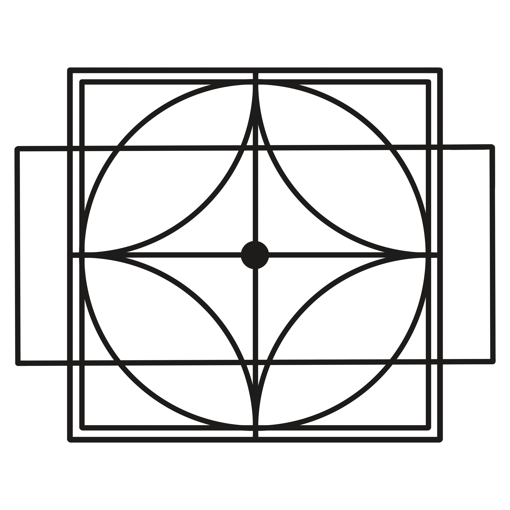

Travis Knudsen


The Conscious Architect
Weekly essays on attention, the body's intelligence, and the architecture we're all living inside of and rarely see.

The Conscious Architect
Weekly essays on attention, the body's intelligence, and the architecture we're all living inside of and rarely see.

A memoir, in progress
A former broadcast meteorologist and regional air-quality director traces a way of seeing back to where it began, in a childhood spent forecasting a house he could not control. The book is the account of what that life produced, and what it cost. Essays from the writing appear every Sunday in the newsletter.